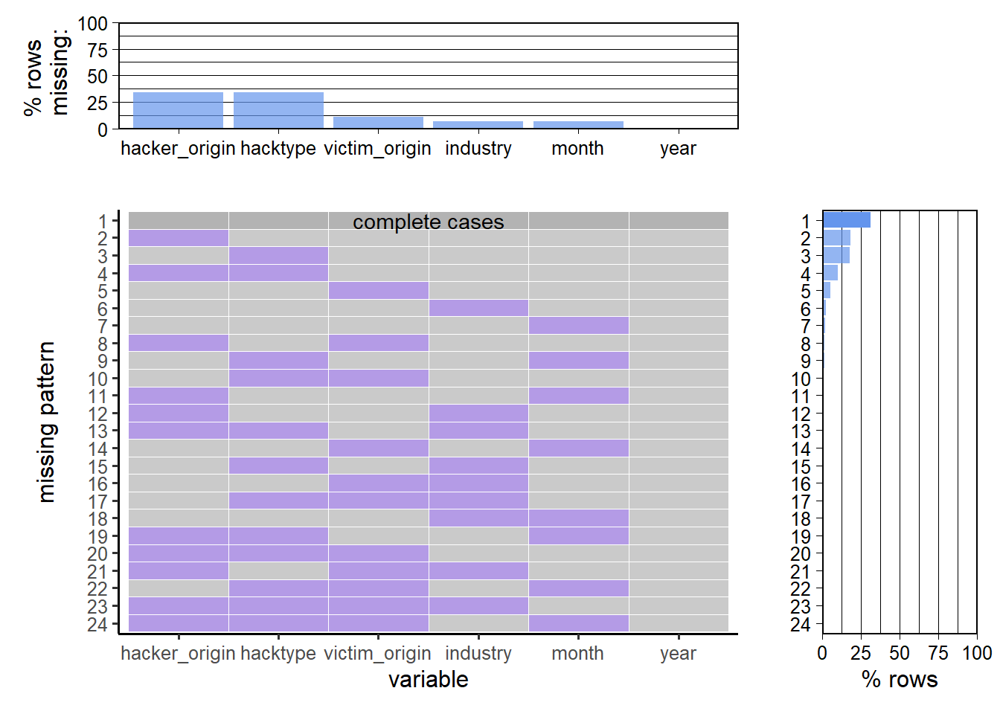

Chapter 3 Data
3.1 Sources
The data originates from the Center for Strategic and International Studies (CSIS), a nonprofit policy research organization that seeks to inform policymakers about pertinent global problems. Of which, cybersecurity has rightfully gained significant attention in today’s digital age.
A list of the most significant cybersecurity incidents from 2003 are provided based on research by the CSIS Strategic Technologies Program. These incidents involve cyber attacks on government agencies, defense and high tech companies, or crimes with over a million dollars in losses. Attacks of such scale usually require significant resources and cyber offensive capabilities, and they can mostly be attributed to the work of nation states. A sample of the transgressions obtained from the report are shown in Figure 3.1.
Figure 3.1: Sample data from CSIS Cybersecurity Incidents Report
The following information can be obtained from each incident:
- Time of Incident
- Hacker Origin
- Victim Origin
- Type of Hack
- Industry Targeted
In some instances, the hacker origin, type of hack or industry targeted are not immediately obvious from the description provided (e.g. second to last incident in Figure 3.1) and will be labeled with “Unknown” in the subsequent data extraction process.
3.2 Cleaning / transformation
Significant efforts have been put into extracting all incidents from the report and labeling each feature based on the description of the hack. These two steps were done in Python for the ease of using established Natural Language Processing (NLP) methods to automate the process. The links to the Jupyter notebooks used in the two steps can be found below:
3.2.1 Incident Extraction
Most of the incidents were successfully identified by the set of regular expressions in the notebook. However, a small number of these incidents were either split into two or combined with the previous incident. They were identified by manually inspecting the csv file obtained from running the code in the notebook.
3.2.2 NLP Feature Prediction
There are a total of over 900 incidents detailed in the report. Labeling each incident manually with all the features will take a significant amount of time. Instead, a subset of the actual data was labeled and used to train an NLP model to predict each feature for the remaining incidents.
200 incidents were labeled with the previously identified features. Of which, 150 was used to train and validate the NLP model, with the remaining 50 used to evaluate the performance of the model. Separate sets of model weights were used to predict each feature. The BERT model was trained to predict the best answer from a list of multiple choice options. Each model was trained until it achieved at least 80% accuracy on the hidden evaluation data.
3.3 Missing value analysis
A value is considered missing if it is labeled Unknown by the NLP model.

The graphs above show that the two columns with the largest number of missing values are hacker_origin and hacktype, with close to 35% of the rows missing the information. A sample of the incidents with both features missing is shown below:
## [1] "November 2020 . A group of hackers for hire launched attacks against a group of targets in South Asia, and particularly India, Bangladesh, and Singapore. These attacks included the use of a custom backdoor and crede ntial theft . "
## [2] "August 2016. A group calling itself â\u0080\u009cShadow Brokersâ\u0080\u009d claimed to have penetrated NSA and published a collection of NSA tools on Pastebin. "
## [3] "June 2020 . A Moroccan journalist wa s targeted by unknown actors who sent him phishing messages that could have been used to download spyware developed by Israeli NSO group "
## [4] "March 2017. Wikileaks released a trove of sophisticated CIA hacking tools dated from 2013 to 2016, claiming that the release reflected several hundred million lines of CIA -developed code. "
## [5] "August 2016. Designs and data regarding Indiaâ\u0080\u0099s Scorpene submarines were leaked from the French shipbuilder DCNS. DCNS also builds submarines for Malay sia and Chile, and recently won contracts to build submarines for Brazil and Australia. "It is clear that the descriptions presented in the report do not always reveal the origin of the hacker nor the type of hack that occurred.
A more interesting observation is that a handful of incidents have unknown victim_origin in addition to both hacker_origin and hacktype:
## [1] "February 2022. Since October 2021, a hacking group targeted Palestinian individuals and organizations with malware. Researchers suggest that the operat ion could be connected to a broader campaign by a hacking group commonly attributed to the cyber arm of Hamas that started in 2017. "
## [2] "May 2017. A ransomware campaign spread to 99 countries using a vulnerability revealed in the Shadow Brokersâ\u0080\u0099 April 2017 dump of NSA tools. "
## [3] "April 2017. The Shadow Brokers, the group that claimed to have hacked the NSA in August 2016, released yet another trove of purported NSA hacking tools, in cluding one that suggests the NSA had gained access to SWIFT messages. "Palestine was not provided as an option for the NLP model to select from and hence it was not predicted. The second and third incidents involved multiple unspecified countries and the NSA respectively, in which the model was not able to attribute to the US.
The analysis above show that the reported incidents sometimes lack valuable information on the features of interest. It is important to keep this fact in mind when attempting to visualize the data.